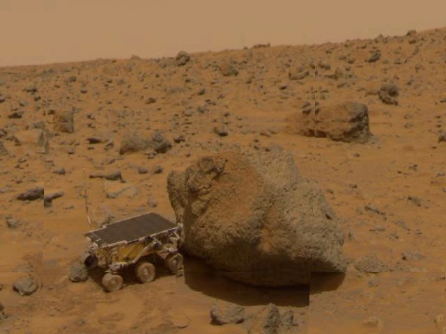
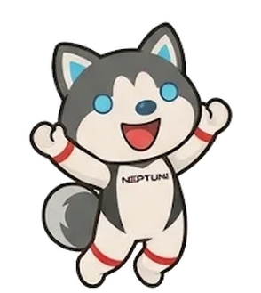
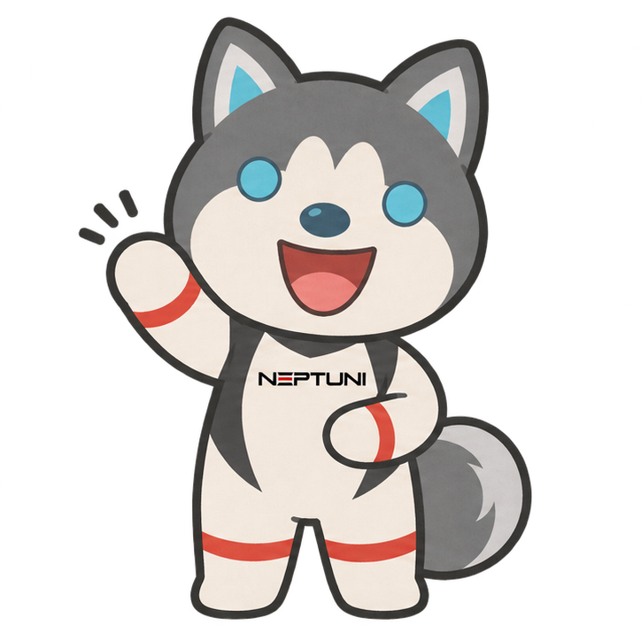

Mars Pathfinder · 1997
Control desdela Tierra
Eres parte del equipo que maneja a Sojourner, el primer rover que recorrió Marte. Tus órdenes tardan varios minutos en llegar, así que no puedes manejarlo en vivo: planificas, envías y miras qué pasa.
- 1El APXS va atrás. El instrumento que analiza las rocas está en la parte trasera: acércate a la roca de reversa.
- 2Trabaja cerca del módulo. Sojourner hablaba con la Tierra a través del módulo Pathfinder. En sus primeros días trabajó a unos 10 m de él; en el juego, tu zona de trabajo llega a 12 m.
- 3Cuidado con las rocas. Sus láseres detectan obstáculos y lo detienen antes de chocar.
3 días de misión · laptop o celular · también con el teclado

Día 1 de 3
Barnacle Bill
Enviando órdenes…

Tu programa
Toca las órdenes para armar tu plan.
Teclado y botones
- ↑Avanzar
- ↓Retroceder
- ←Girar izquierda
- →Girar derecha
- AAnalizar con APXS
- EnterEnviar a Marte
- ⌫Borrar última

Certificado de misión
Operador/a de Sojourner
Tu nombre
Completó los 3 días de análisis en Ares Vallis, planificando órdenes desde la Tierra como el equipo de Mars Pathfinder.
¡Misión cumplida! Ahora eres parte del equipo de Sojourner. Estoy muy orgulloso de ti: planificaste, te equivocaste, lo volviste a intentar y lo lograste. ¡Así trabajan los grandes exploradores!
Dato real: Sojourner estaba diseñado para funcionar una semana y trabajó 83 días marcianos. En total recorrió unos 100 metros.